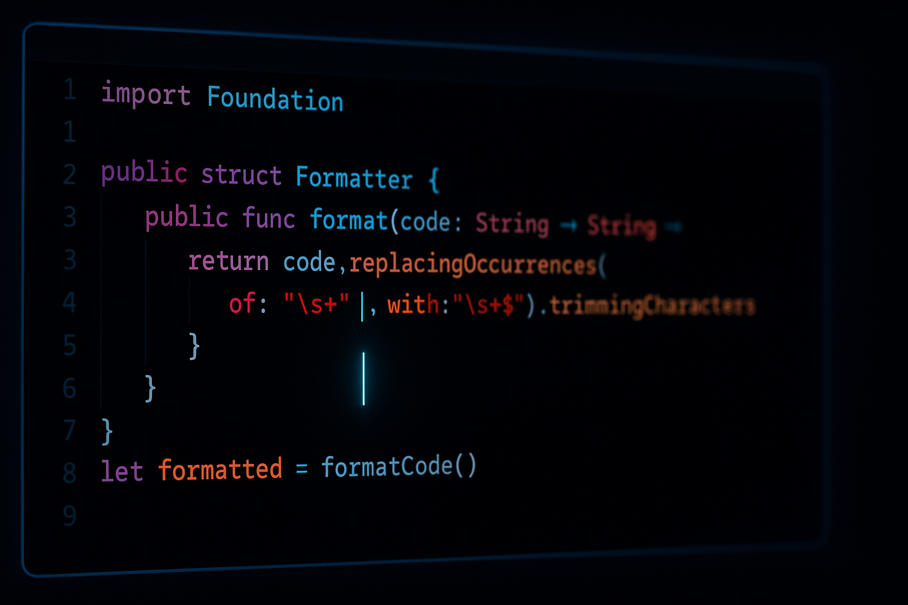
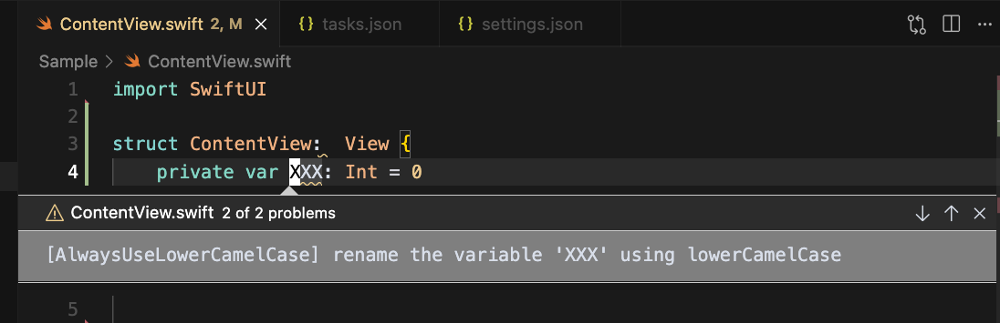

Cursor/VSCodeで編集中にswift-format

先日よりCursorでiOSアプリ開発をするようになり、これまでVimでやっていたことを順々にCursorに移植しています。
その中の1つが swift-format です。
わたしは現在編集中のファイルのみswift-formatでチェックするのが好みです。
- プロジェクト全体を
swift-formatにかけるのはビルドのタイミング - ファイルを保存したタイミングでそのファイルだけを
swift-formatでチェック
という区分けをしています。
実際にCursorでswift-formatを利用している様子がこちらです。Problemsでの一覧表示や自動整形にも対応しています。
swift-formatの使い方
Xcodeに内蔵されたswift-formatで特定のファイルをチェックするコマンドは以下です。
xcrun swift-format lint Sample/Sample.swift
Cursor/VSCodeのタスク
これをCursor/VSCodeのタスクに設定したのが以下です。
{
"label": "Lint Current File",
"type": "shell",
"command": "zsh",
"args": [
"-c",
"if [ \"${fileExtname}\" = \".swift\" ]; then xcrun swift-format lint \"${file}\"; fi"
],
"problemMatcher": [
{
"owner": "swift-format",
"fileLocation": ["absolute"],
"pattern": {
"regexp": "^(.*):(\\d+):(\\d+):\\s+(error|warning):\\s+(.*)$",
"file": 1,
"line": 2,
"column": 3,
"severity": 4,
"message": 5
}
}
],
"presentation": {
"reveal": "silent",
"revealProblems": "onProblem"
}
}
基本的には xcrun swift-format lint \"${file}\" というコマンドを実行するだけです。
以下、設定についての説明です。
problemMatcher- この設定にマッチしたerrorやwarningをProblemsと認識され、Problemsパネルに一覧表示されたり、VSCodeの仕組みを利用できます
presentation"reveal": "silent"は問題が発生しなければターミナルパネル（実行結果）を表示しない設定です"revealProblems": "onProblem"は問題が発生したらProblemsパネルを自動で開く設定です
ファイル保存で自動実行
調べた限りですと、Cursor/VSCodeの公式な設定で「ファイル保存時に特定のタスクを実行する」ということはできないようです。 これをどうにかする方法として、
Run On Saveというプラグインを使うeditor.codeActionsOnSaveの設定で対応する
などもありそうでしたが、今回は、より簡易な方法としてファイル保存のキーボードショートカットで「ファイル保存」「swift-format lint」を実行することにしました。
わたしはVSCodeVimを使っているのでsettings.jsonに以下を加えました。
"vim.normalModeKeyBindingsNonRecursive": [
{
"before": ["<leader>", "w"],
"commands": [
{
"command": "workbench.action.files.save"
},
{
"command": "workbench.action.tasks.runTask",
"args": "Lint Current File"
}
]
}
]
わたしはキーボードを Space, w と打つとファイルを保存するようにしているので、これをしたときに同時に先ほど追加した Lint Current File というタスクを実行し、現在編集中のファイルだけswift-format lintされるようになりました。
Problemsパネルでの表示
この設定をしてファイル保存し、実際に問題となるコードがある場合、CursorのProblemsパネルに以下のように表示されます。

もちろん、このパネルから問題を選んでそのコード行にジャンプすることもできますし、これらの問題を各ファイルでインライン表示することも可能です。

自動整形
swift-formatは以下のコマンドで自動整形もできますので、もちろんこれをCursorで実行することも可能です。
xcrun swift-format format --in-place Sample/Sample.swift
これを実行するタスクがこちらです。
{
"label": "Format Current File",
"type": "shell",
"command": "zsh",
"args": [
"-c",
"if [ \"${fileExtname}\" = \".swift\" ]; then xcrun swift-format format --in-place \"${file}\"; fi"
],
"presentation": {
"reveal": "silent"
},
"problemMatcher": []
}
あとは、これを Run Task で実行するなり、お好みのキーボードショートカットで呼び出すようにするだけです。
まとめ
- Cursor/VSCodeから
swift-formatを使うのは簡単です - VSCodeのProblemsの仕組みに乗せるのも簡単です
- swift-formatの単体実行はビルドと違って一瞬で終わるため、問題を早期発見するのに役立ちます
Cursorで快適にSwiftを書くためにぜひご活用ください。
※ファイル保存のタイミングでswift-formatを実行する部分ですが、VSCodeオフィシャルな設定項目で簡単に実現する方法があれば、アドバイスをいただけると幸いです！


![[WWDC24] SwiftUIの新機能のまとめ](/images/wwdc24-whats-new-in-swiftui/top.jpg)
![[visionOS] 最もシンプルな完全没入空間を試すサンプルコード](/images/visionos-simplest-full-immersion-space-app/top.png)
![[iOSDC Japan 2023] SharePlayの歴史と進化 - そしてvisionOSへ](/images/iosdc2023-shareplay/top.jpg)